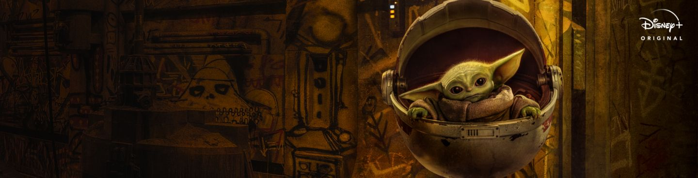

Featured Project
Netflix Streaming Interface
Cinematic title browsing with a featured hero, search, title details and a saved list.
7 projects
Featured Project
Cinematic title browsing with a featured hero, search, title details and a saved list.

A branded carousel, studio collections, title details and a persistent watchlist.

A music dashboard with searchable collections, saved tracks and a working sample-audio player.
SQL queries explore the Netflix catalog by title type, genre, country, release year, and rating.
A Python notebook explores relationships among movie budgets, gross earnings, and ratings using scatterplots and correlation charts.

Analyzes a global YouTube statistics dataset, including relationships among subscribers, earnings estimates, and geography.
A Java and Spring Boot prototype with REST endpoints, local persistence, service tests and a Docker build.
Try a different search, tool, or skill area.